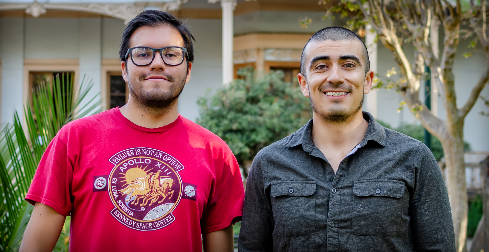

- © 2020-2026 LimnoTec SpA Escríbenos 0
LimnoTec Consultores SpA es una empresa independiente de consultoría ambiental especializada en el estudio de ecosistemas acuáticos, que recoge la amplia experiencia de sus socios fundadores Daniel Salas y Miguel Cisterna. Ambos profesionales suman 15 años de experiencia en el desarrollo de estudios de limnología.

La empresa está establecida en la comuna de Providencia, Santiago. Dentro de sus principales competencias se cuenta la asesoría para el manejo y conservación de ríos, lagos y sistemas asociados; el monitoreo y análisis de la calidad de agua y sedimento; estudios de ecología fluvial; determinación de caudales ambientales; apoyo en la preparación de EIA/DIA en temas acuáticos, entre otros.
Si bien la empresa fue fundada por Daniel y Miguel, cuenta con una amplia red de colaboradores, entre los que se incluyen actores del mundo privado y académico. En línea con nuestro lema "Con base en la ciencia, con foco en el cliente", LimnoTec pretende abordar y proponer soluciones basadas en conocimiento científico.
Antes de formar LimnoTec SpA, Daniel se desempeñó como Gerente Técnico en GESAM Consultores Ltda, donde diseñó, lideró y ejecutó numerosos estudios ambientales enfocados en sistemas acuáticos por más de 10 años. Durante su formación académica también colaboró en investigaciones científicas en el Instituto de Ecología y Biodiversidad (IEB) bajo el alero del Dr. David Véliz y la profesora Irma Vila, en la Facultad de Ciencias de la Universidad de Chile. Esto fortaleció su capacidad de abordar diversas problemáticas desde una mirada crítica, práctica pero rigurosa. Desde sus estudios de pregrado mostró una inclinación por el estudio de los ecosistemas acuáticos, lo que capitalizó en su tesis de maestría, enfocada en aspectos morfológicos, genéticos y de distribución del género de peces Cheirodon, conocidos popularmente como "pochas". En 2017 viajó por cerca de un año a Canadá y Estados Unidos, donde reflexionó y definió sus próximos desafíos personales e intelectuales en Chile, entre ellos, la creación de una consultora ambiental con una sólida base científica.
Por su parte, Miguel fue Jefe de Proyectos en GESAM Consultores Ltda. por más de 5 años, realizando estudios ambientales en ecosistemas acuáticos. Ejecutó numerosas y extensas campañas de terreno en lugares remotos y de difícil acceso, velando siempre por la seguridad del equipo humano y el correcto cumplimiento de los objetivos. Además, se especializó en la coordinación y ejecución de planes de seguimiento asociados a proyectos públicos y privados, manteniendo durante varios años trato directo con la contraparte técnica de la Dirección de Obras Hidráulicas del MOP. Si bien con anterioridad Miguel realizó su práctica profesional en CONAF y desarrolló su memoria de título en la Antártica, luego de su titulación destinó cerca de 3 años a viajar y trabajar por el mundo, lo que le permitió adquirir y desarrollar habilidades comunicativas en la resolución de conflictos, trabajo en equipos multidisciplinarios y multiculturales, y la capacidad de abordar proactiva y rigurosamente tareas complejas, lo que repercutió positivamente en su desempeño laboral posterior.
Las fortalezas de Daniel y Miguel se conjugan positivamente en LimnoTec, por lo que las principales características de la empresa son la rapidez de respuesta, adaptabilidad y flexibilidad, pero también la responsabilidad, rigurosidad y compromiso. Por lo tanto, junto con nuestro equipo de colaboradores, disponemos de profesionales de una forma eficiente en respuesta a las necesidades particulares de los proyectos.
Si bien LimnoTec se creó recientemente, la compañía recoge la amplia experiencia de sus socios fundadores, Daniel Salas y Miguel Cisterna, quienes se desempeñaron por largo tiempo prestando servicios de forma directa, sin intermediarios, a los siguientes clientes: